| PHRYGANA | Fauna | Flora | Galles | liste des espèces |
contact -
info - commentaires phrygana1 (at) gmail.com |
| Particularités crétoises | nouveautés | Mines | ressources naturelles |
| Calicotome villosa (POIR.) LINK |
| 324 | Flora | FABACEAE | Genisteae | Calicotome LINK |
|
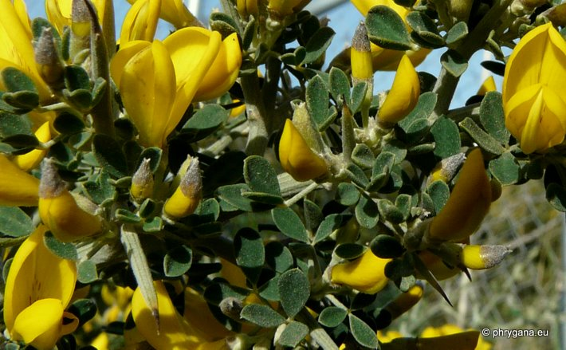 Calicotome villosa Agios Giorgos (Melambes) 03 mars 2010 |
| Hairy Thorny Broom -- le Calicotome velu - el Erguén -- Sparzio villoso -- Ασπάλαθος | |
| Buisson très ramifié et épineux; jeunes rameaux, dessous des feuilles, calice et gousses à poils drus et soyeux | |
| Feuilles: composées-trifoliées, les folioles longues de 5 - 15 mm, obovales, terminées par une courte pointe, pubescentes sur la face inférieure | |
| Tiges: alternes, striées-sillonées | |
| Fleurs: axillaires, groupées en grappes (2 à 15 fleurs), parfumées; corolle longue de 12 à 18 mm, jaune or; calice poilu | |
| Fruit: une gousse poilue longue de 20 - 40 x 7 mm, brun roussâtre à maturité, à grosse suture | |
| Hauteur: 60 - 300 cm | Type biologique: nanophanérophyte ramifié,cespiteux |
| Floraison: (janvier-) février mars avril | |
| Altitudes: 0 - 700 (- 1400) m | |
| Statut en Crète: indigène | |
| Biotopes en Crète: garrigue, terrasses abandonnées, phrygana, terrains pierreux et secs | |
| Distribution: région Méditerranéenne européenne, Afrique du Nord, Proche-Orient | |
| Espèce héliophile. | |
|
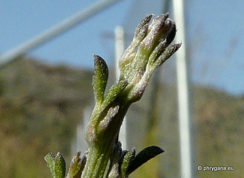
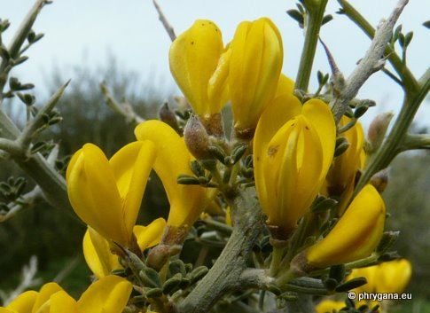 Calicotome villosa Agios Giorgos (Melambes) 03 mars 2010 Calicotome villosa Agios Giorgos (Melambes) 11 mars 2010 |
|
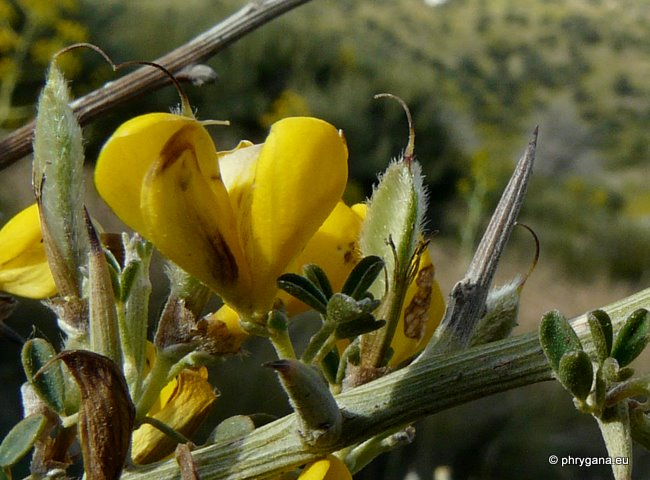 Calicotome villosa Agios Giorgos (Melambes) 15 avril 2011 |
|
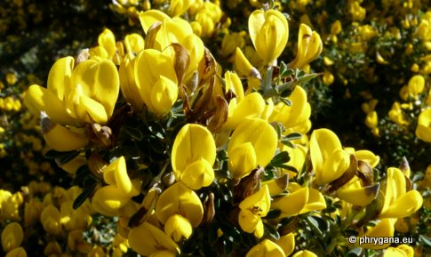
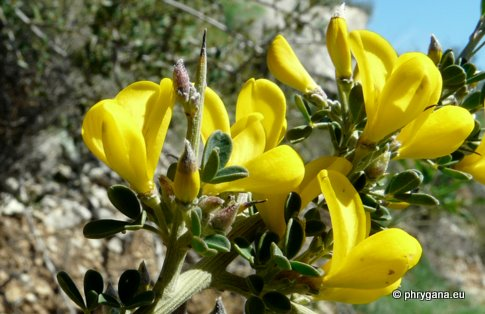 Calicotome villosa Agios Giorgos (Melambes) 20 mars 2011 |
|
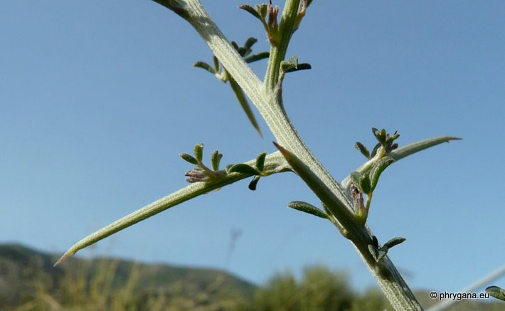 Calicotome villosa Agios Giorgos (Melambes) 03 mars 2010 |
|
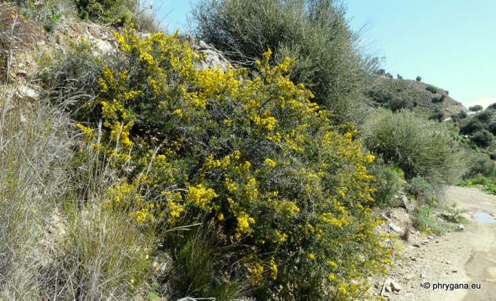 Calicotome villosa Agios Giorgos (Melambes) 20 mars 2011 |
|
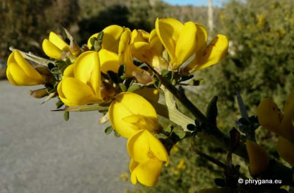
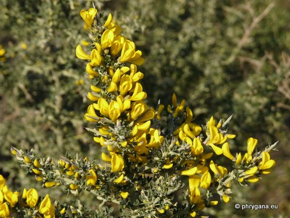 Calicotome villosa Agios Giorgos (Melambes) 18 février 2012 |
|
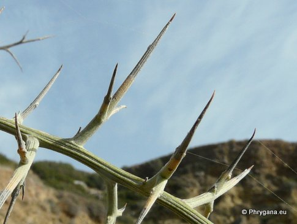
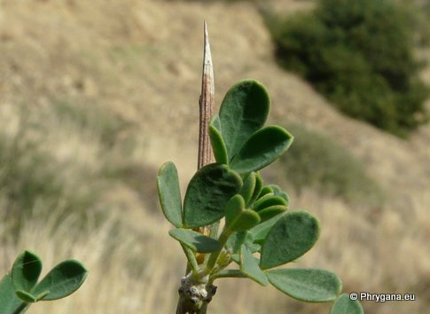 Calicotome villosa Agios Giorgos (Melambes) 26 décembre 2010 |
| 10 décembre 2012 |
| © paul fontaine 2007 -- 2012 |